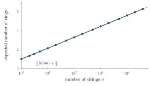

A box contains \(n\) pieces of string, each of which has two ends. I select two string ends at random and tie them together. This creates either a ring (if the two ends are from the same string) or a longer piece of string. I repeat the process of tying together string ends chosen at random until there are none left.
Find the expected number of rings created at the first step and hence obtain an expression for the expected number of rings created by the end of the process. Find also an expression for the variance of the number of rings created.
Given that \(\ln 20 \approx 3\) and that \(1 + \frac12 + \cdots + \frac1n \approx \ln n\) for large \(n\), determine approximately the expected number of rings created in the case \(n = 40\,000\).
The hook
Put a hundred pieces of string in a bag, so that only their ends poke out. Pick two ends at random and tie them; repeat until no loose ends are left. You end up with a tangle of loops. How many? A hundred strings could in principle make a hundred little rings, or one enormous loop. Remarkably, the expected number is only about \(3.3\); with forty thousand strings, it is still only about \(6\).
The key observation makes the problem almost trivial: after each knot, the box simply contains one fewer piece of string, whatever happened. The process “forgets” its history, and the number of rings becomes a sum of independent coin tosses with changing probabilities.
Before you start
After tying two ends together, how many pieces of string are left (counting a ring as no longer a “piece”)? Does it depend on whether a ring was made?
If the two ends belong to the same string, it becomes a ring and \(n - 1\) pieces remain. If they belong to different strings, those two become one longer piece, and again \(n - 1\) pieces remain. Either way, we are left with \(n - 1\) pieces of string, each with two ends.
Working it through
Stage 1 The first knot
There are \(2n\) ends. Choose one; its partner is equally likely to be any of the other \(2n - 1\) ends, and exactly one of these belongs to the same string. So the first knot makes a ring with probability \(\frac{1}{2n - 1}\), and the expected number of rings created at the first step is \(\frac{1}{2n - 1}\).
Stage 2 All the knots
By the observation above, what is the situation before the second knot? The third? Let \(I_k\) indicate a ring at the knot made when \(k\) pieces remain. What are the \(\mathrm{E}(I_k)\)?
Before each knot the box contains \(k\) pieces for \(k = n, n - 1, \ldots, 1\), and the knot makes a ring with probability \(\frac{1}{2k - 1}\). (The last knot, with one piece left, always makes a ring.) The total number of rings is \(R = I_n + I_{n-1} + \cdots + I_1\), so \[\mathrm{E}(R) = \sum_{k=1}^{n}\frac{1}{2k - 1} = 1 + \frac13 + \frac15 + \cdots + \frac{1}{2n - 1}. \qed\]
Stage 3 The variance
Are the indicators \(I_k\) independent? (Does the probability of a ring at one step depend on what happened earlier?)
At each step, the probability of a ring is \(\frac{1}{2k - 1}\) whatever happened before, because the configuration is always “\(k\) pieces of string”. So the \(I_k\) are independent, and variances add: \[\mathrm{Var}(R) = \sum_{k=1}^{n}\frac{1}{2k - 1}\Bigl(1 - \frac{1}{2k - 1}\Bigr) = \sum_{k=1}^{n}\frac{2k - 2}{(2k - 1)^2}. \qed\]
Stage 4 Forty thousand strings
Write the sum of the reciprocals of the odd numbers up to \(2n - 1\) using harmonic numbers.
The sum of reciprocals of all numbers up to \(2n\), minus those of the even numbers, is \[\sum_{k=1}^{n}\frac{1}{2k - 1} = H_{2n} - \tfrac12H_n \approx \ln(2n) - \tfrac12\ln n = \tfrac12\ln(4n).\] For \(n = 40\,000\), \(4n = 160\,000 = 20^4\), so \(\mathrm{E}(R) \approx \frac12 \cdot 4\ln20 \approx 6\).■ (The exact value is \(6.28\); the difference comes from Euler’s constant, as \(H_n \approx \ln n + 0.577\).)

Looking back
Find what the process forgets. After each knot the box was “\(k\) pieces of string”, regardless of history.
Indicators again. The number of rings was a sum of indicators, one per knot.
Independence gives the variance. Because each step’s probability did not depend on the past, the indicators were independent.
What’s really going on
Logarithmic growth
The expected number of rings grows like \(\frac12\ln n\), and the variance is close to the mean (both are sums of small probabilities). By the central limit theorem (Section 12.24), the number of rings is approximately normal for large \(n\), with mean and variance about \(\frac12\ln(4n)\). With \(40\,000\) strings, you will usually get between \(2\) and \(11\) rings.
Cycles of random permutations
The same logarithm appears in the number of cycles of a random permutation of \(n\) objects: on average \(H_n \approx \ln n\) (the strings problem is a close relative, with \(\frac12\ln n\)). Random permutations have few cycles: one giant cycle usually contains most of the elements, and the fraction of elements in the largest cycle averages about \(0.62\), the Golomb–Dickman constant. Tangling strings at random behaves the same way: most of the string ends up in one or two long loops. These facts are part of the study of random combinatorial structures, which has connections to number theory (the prime factors of a random integer behave like the cycles of a random permutation).
The string-tying problem is a toy model for physical systems. Long polymer molecules in a solution join end to end to form rings and chains, and the statistics of loop formation follow similar rules. In knot theory, mathematicians ask the harder question of how likely a random closed loop is to be knotted; for long random loops, the answer tends to \(1\), a result proved by De Witt Sumners and Stuart Whittington in 1988.
The thinking skill
If, after each step, the system is in a state that depends only on the number of steps taken, then the steps behave independently, and expectations and variances simply add.
This is the idea behind the coupon collector (Section 9.11), where each stage is a fresh geometric wait, and it reappears in the theory of Markov chains, where only the current state matters.
Try this next
Small cases. For \(n = 2\), list the possibilities and check that the expected number of rings is \(\frac43\).
One big loop. Show that the probability that the process ends with a single loop containing all the strings is \(\prod_{k=2}^{n}\bigl(1 - \frac{1}{2k - 1}\bigr)\), and that this is approximately \(\sqrt{\frac{\pi}{4n}}\) for large \(n\). (Hint: relate the product to \(\binom{2n}{n}\).)
Cycles of permutations. Show that the expected number of cycles of a random permutation of \(n\) objects is \(H_n\), by building the permutation one element at a time (the “Chinese restaurant” construction).
The variance. Show that \(\mathrm{Var}(R) = \mathrm{E}(R) - \sum_{k=1}^{n}\frac{1}{(2k - 1)^2}\), and that the subtracted sum tends to \(\frac{\pi^2}{8}\).
Further reading
Peter Winkler, Mathematical Puzzles: A Connoisseur’s Collection (A K Peters), which includes the string-tying puzzle.
Richard Arratia, Andrew Barbour & Simon Tavaré, Logarithmic Combinatorial Structures (European Mathematical Society). Cycles, primes and random structures, for later.
Colin Adams, The Knot Book (American Mathematical Society). An introduction to knot theory, including random knots.